Organizing Committee
| Name | Institution | Country | |
|---|---|---|---|
| General Chairs | |||

|
Dan Dongseong Kim | The University of Queensland | Australia |
 |
Ryan Ko | The University of Queensland | Australia |
| Program Committee Chairs | |||
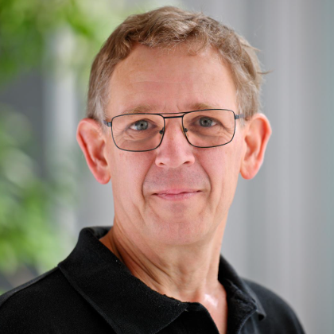 |
Marc C. Dacier | KAUST | Saudi Arabia |
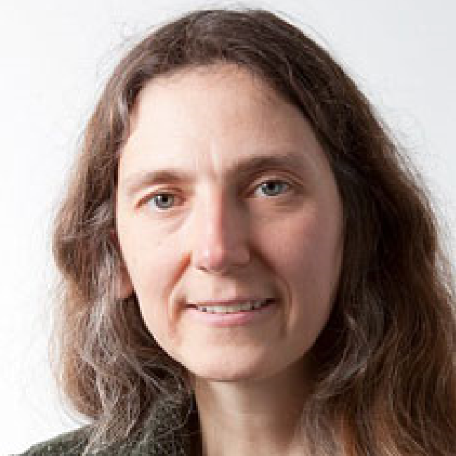 |
Julia Lawall | Inria-Paris | France |
| Program Coordination Chair | |||
| Jin Hong | The University of Western Australia | Australia | |
| Industry Track Chairs | |||
| Saurabh Jha | IBM | USA | |
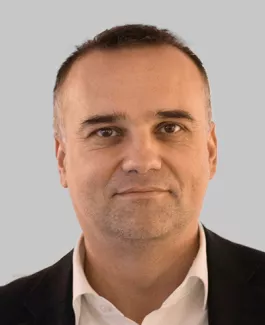
|
Wilfried Steiner | TTTech | Austria |
 |
Phuong Cao | University of Illinois at Urbana-Champaign | USA |
| Disrupt 2024 | |||
|
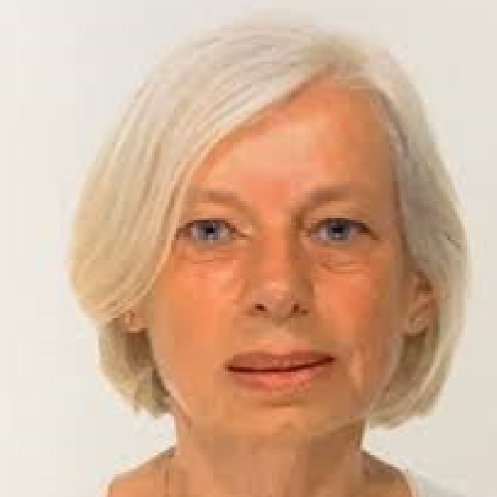
|
Felicita Di Giandomenico | CNR-ISTI | Italy |
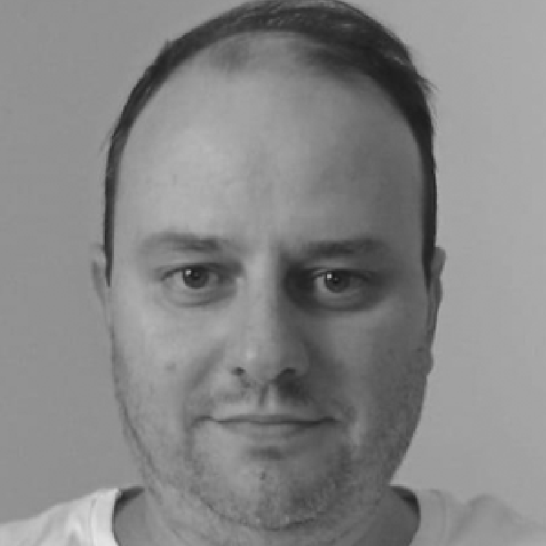
|
Eduardo Alchieri | Universidade de Brasilia | Brazil |
| Artifact Chairs | |||
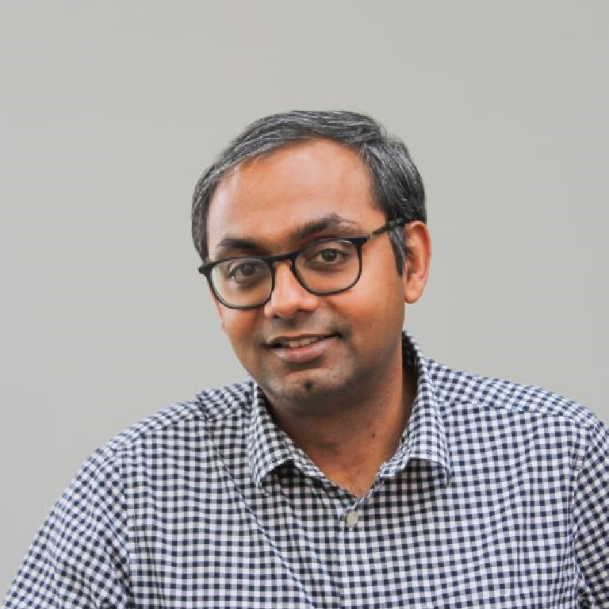
|
Karthik Pattabiraman | University of British Columbia | Canada |
| Roberto Natella | Federico II University of Naples | Italy | |
| Workshop Chairs | |||
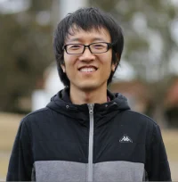 |
Zhi Zhang | University of Western Australia | Australia |
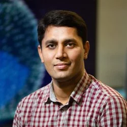
|
Rizwan Asghar | University of Surrey | UK |
| Doctoral Forum Chairs | |||
 |
Mengmeng Ge | University of Canterbury | New Zealand |
 |
Ermeson Andrade | Federal Rural University of Pernambuco | Brazil |
| Posters Track Chairs | |||
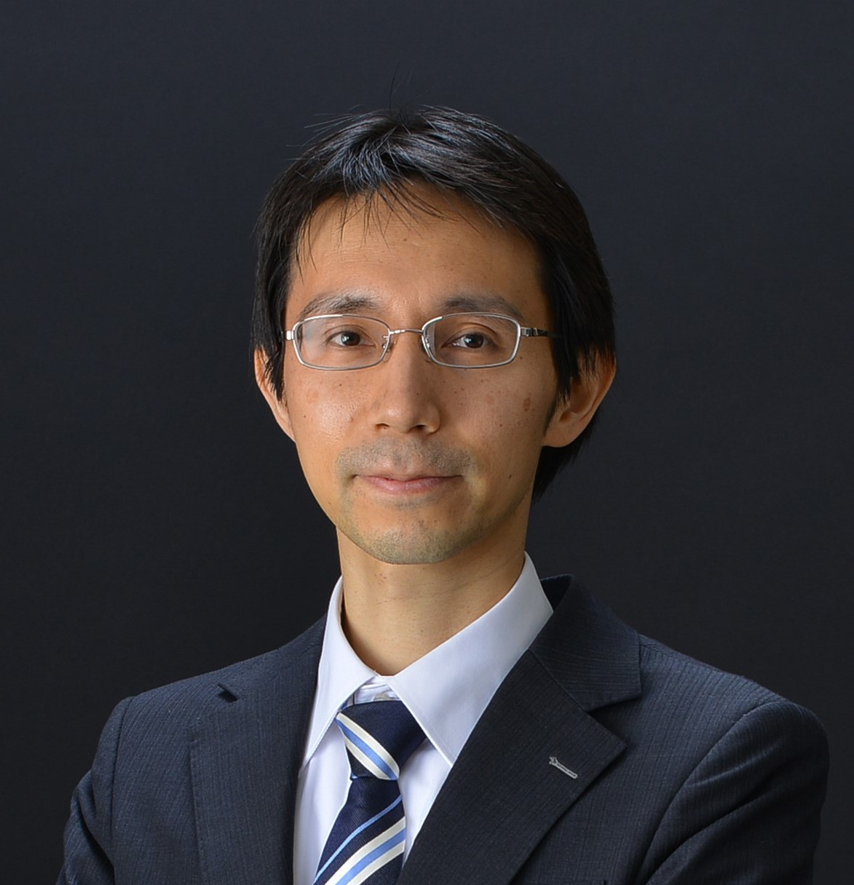 |
Fumio Machida | University of Tsukuba | Japan |
| Lishan Yang | George Mason University | USA | |
| Tutorial Chairs | |||
 |
Roberto Pietrantuono | Federico II University of Naples | Italy |
 |
Long Wang | Tsinghua University | China |
| Publication Chairs | |||
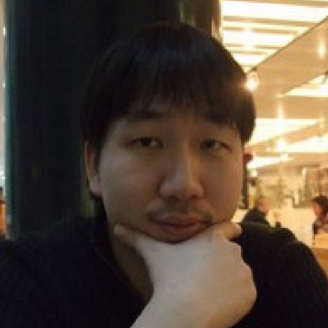
|
Hyoungshick Kim | Sungkyunkwan University | South Korea |
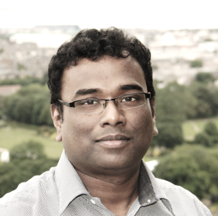
|
Shantanu Pal | Deakin University | Australia |
| Xingliang Yuan | Monash University | Australia | |
| Publicity Chairs | |||
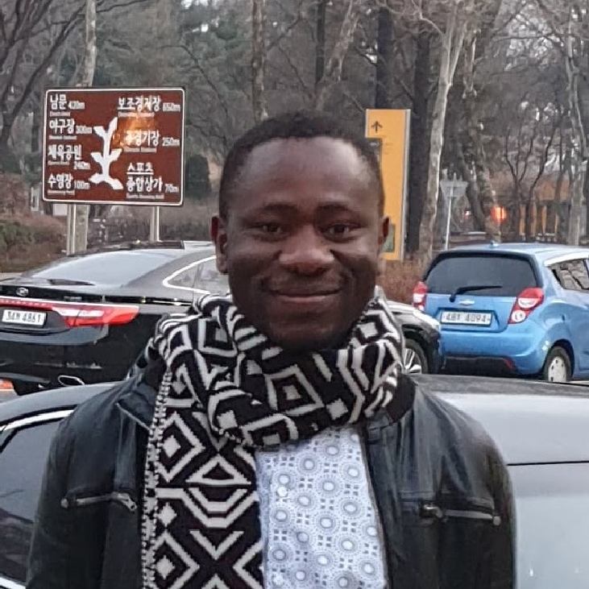 |
Simon Yusuf Enoch | Federal Univesrity Kashere | Nigeria |
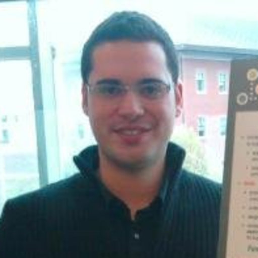
|
Antonio Pecchia | University of Sannio | Italy |
| Chia-Mu Yu | National Yang Ming Chiao Tung University | Taiwan | |
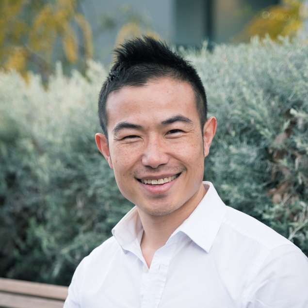
|
Jiangshan Yu | Monash University | Australia |
| Shantanu Pal | Deakin University | Australia | |
| Sponsorship Chairs | |||
| TBC | TBC | TBC | |
| Local Arrangement Chair | |||
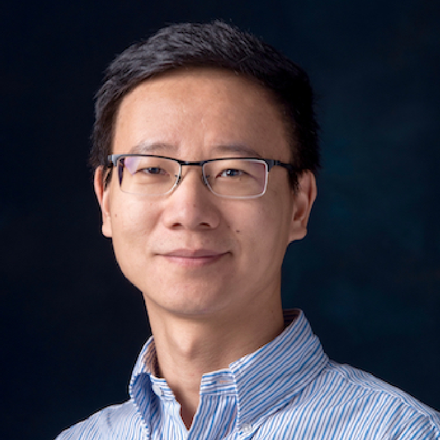 |
Guowei Yang | The University of Queensland | Australia |
| Finance & Registration Chair | |||
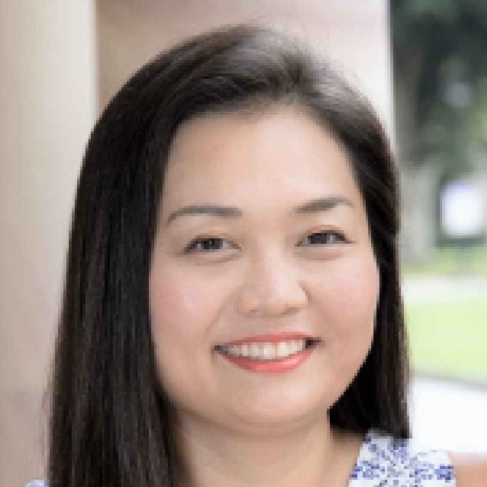 |
Kana Smith | The University of Queensland | Australia |
| Webmaster | |||
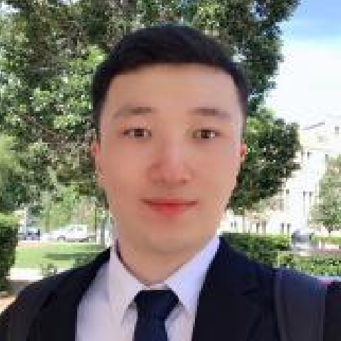
|
Shunyao Wang | The University of Queensland | Australia |
Powered by w3.css